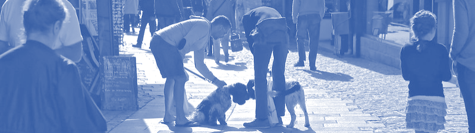

Introduction

The MIDFIELD Institute is a hands-on workshop that helps participants explore using the Multiple-Institution Database for Investigating Longitudinal Development (MIDFIELD). The Institute ia an all-virtual meeting over several days.
About MIDFIELD
MIDFIELD is a partnership of higher education institutions with engineering programs. Begun in 2004 as an extension of the SUCCEED Longitudinal Database, MIDFIELD contains student-level records for all undergraduate, degree-seeking students at the partner institutions.
As of June 2024, MIDFIELD contains student-level records for 2.4 M undergraduates at 21 US institutions.
Facilitators
- Susan Lord
-
Director of the MIDFIELD Institute and Professor and Chair of Integrated Engineering at the University of San Diego. She is a Fellow of the IEEE and the ASEE. Dr. Lord has considerable experience facilitating workshops including the National Effective Teaching Institute (NETI) and special sessions at FIE. (slord@sandiego.edu)
- Matthew Ohland
-
MIDFIELD Director and Principal Investigator. He is Professor and Associate Head of Engineering Education at Purdue University and a Fellow of IEEE, ASEE, and AAAS. Dr. Ohland has considerable experience facilitating workshops including the NETI and CATME training. (ohland@purdue.edu)
- Marisa Orr
-
(On leave.) MIDFIELD Associate Director and Associate Professor in Engineering and Science Education with a joint appointment in Mechanical Engineering at Clemson University. She received the 2009 Helen Plants Award for the best nontraditional session at FIE, “Enhancing Student Learning Using SCALE-UP Format.” (marisak@clemson.edu)
- Russell Long
-
MIDFIELD Managing Director and Data Steward. He developed the stratified data sample for the R packages used in this workshop. Mr. Long is a SAS expert with over twenty years of experience in institutional research and assessment. (ralong@purdue.edu)
- Richard Layton
-
MIDFIELD Data Visualization Specialist and Professor Emeritus of Mechanical Engineering, Rose-Hulman Institute of Technology. He is the lead developer of the R packages used with the MIDFIELD practice data sets and the associated tutorials and workshop activities. (graphdoctor@gmail.com)
Publications
The MIDFIELD team has been exploring and presenting the stories in the MIDFIELD data for over 10 years. To see a sample of our work, you can follow these links:
- Lord SM, Ohland MW, Layton RA, and Camacho MM (2019) Beyond pipeline and pathways: Ecosystem metrics. Journal of Engineering Education, 108, 32–56. Wickenden best paper award.
- Lord SM, Layton RA, and Ohland MW (2015) Multi-Institution study of student demographics and outcomes in Electrical and Computer Engineering in the USA, IEEE Transactions on Education, 58(3), 141–150. Batchman best paper award.
- Brawner CE, Lord SM, Layton RA, Ohland MW, and Long RA (2015) Factors affecting women’s persistence in chemical engineering, International Journal of Engineering Education 31(6A), 1431–1447.
Link to a comprehensive list of publications by researchers using MIDFIELD.
Acknowledgements
Funding provided by the National Science Foundation grant numbers 1545667 and 2142087.